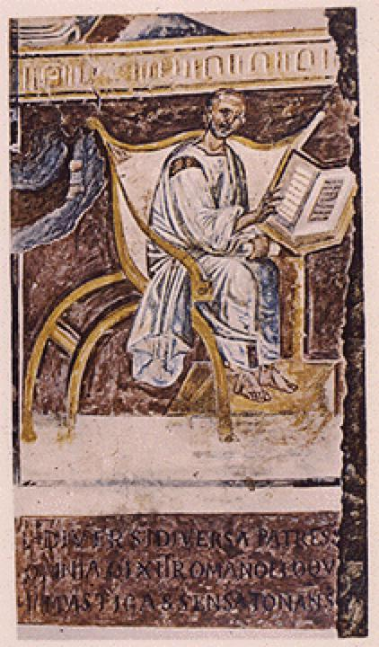
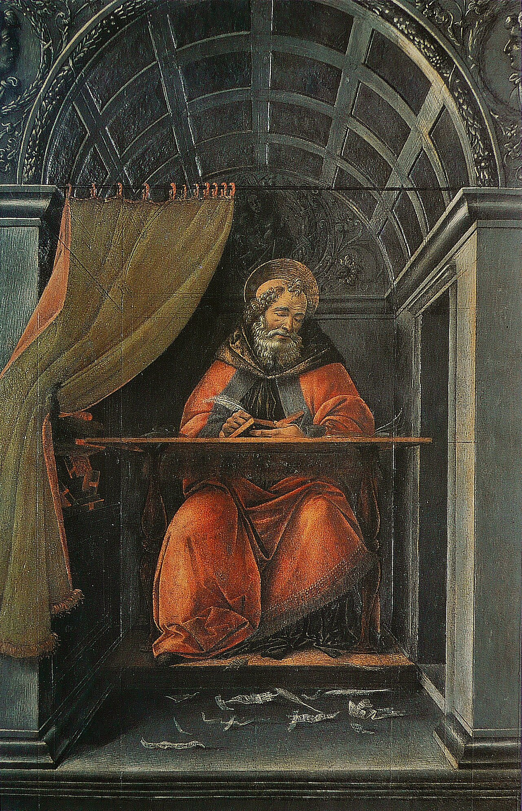
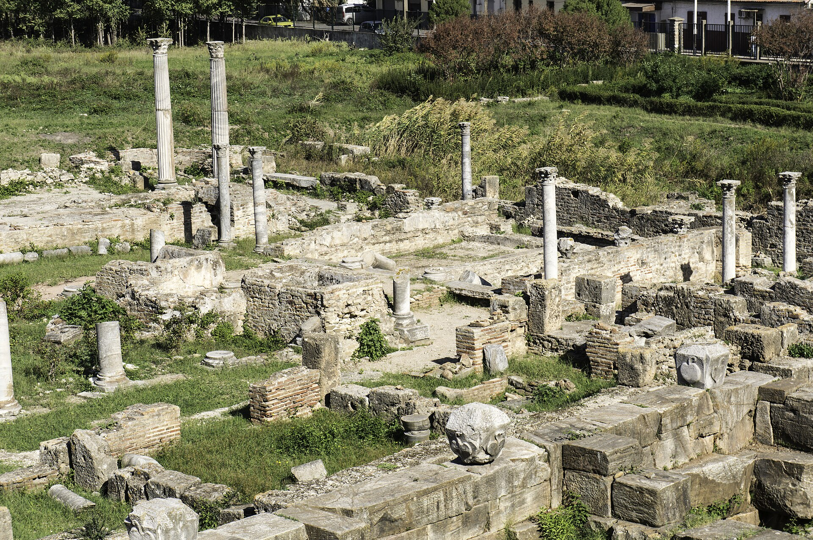

Hay una manera cómoda de contar esta historia: Agustín inventó el pecado original. Es breve, es memorable y es falsa en las dos palabras que importan. No lo inventó —los materiales llevaban dos siglos circulando, como vimos en la entrega anterior— y lo que hizo fue más interesante que inventar: lo sistematizó, le puso nombre técnico y lo convirtió en la pieza que sostiene todo lo demás.
Y hay tres caricaturas que acompañan a esa versión cómoda. Las tres son falsas, y conviene desmontarlas por una razón práctica antes que por rigor: quien las usa se desacredita, y con él se desacredita el argumento bueno que venía detrás.
Un desplazamiento que él mismo reconoció
Lo primero que hay que entender es que «Agustín» no es una posición fija. Hubo un movimiento real a lo largo de cuarenta años, y él lo admitió por escrito en sus Retractationes.
El Agustín temprano escribe contra los maniqueos, y frente a ellos su interés es justamente el contrario del que se le atribuye: defender el libre albedrío. El mal viene de la voluntad, no de la naturaleza —eso es lo que sostiene en De libero arbitrio—, porque si viniera de la naturaleza los maniqueos tendrían razón.
En 396, en el Ad Simplicianum, se produce el giro que suele identificarse como decisivo: la primacía absoluta de la gracia y de la elección divina. Y el Agustín tardío, ya en plena polémica pelagiana, acentúa la incapacidad de la voluntad caída hasta un punto en que su adversario Juliano de Eclana pudo acusarlo de recaer en el maniqueísmo de su juventud: de convertir el mal en algo de la naturaleza, que es exactamente lo que el joven Agustín había combatido.
Cuánto de ese desplazamiento es evolución interna coherente y cuánto endurecimiento polémico es una de las discusiones clásicas de los estudios agustinianos, y sigue viva.

Las tesis, y dónde están
Con eso en mente, esto es lo que efectivamente sostuvo, con las obras en que lo sostuvo.
Que el pecado original es pecado en sentido propio, no un mal ejemplo que se imita. La fórmula es propagatione, non imitatione —«por propagación, no por imitación»— y va a pasar literalmente a Trento mil cien años después.
La concupiscentia, que es la pieza más sutil de todo el sistema: el deseo carnal desordenado es a la vez la pena del pecado de Adán y el medio de su transmisión. Es causa y castigo en el mismo movimiento. Lo desarrolla en De nuptiis et concupiscentia, entre 419 y 421.
La transmisión por generación: todo el que nace de unión sexual nace en el reatus, en el estado de reo. De ahí la centralidad absoluta del bautismo infantil.
La massa damnata, la humanidad como masa condenada, que sin la gracia se perdería justamente. Y aquí un detalle de honradez: el término no es suyo. Procede del quasi in massa de Ambrosiaster.
Y la muerte corporal como pena y no como necesidad natural, con una distinción precisa en De civitate Dei XIII: Adán fue creado mortalis, capaz de morir, pero no moriturus, destinado a morir.
Primera caricatura: «no sabía griego»
Se repite mucho y es falsa. Y como es falsa, en cuanto alguien la corrige se lleva por delante todo el argumento.
La formulación defendible es otra, más modesta y muchísimo más fuerte: su exégesis descansa en un texto latino. Eso sí es cierto, es comprobable y basta para lo que hay que decir.
Pero hay un dato que la caricatura hace imposible ver, y es el mejor de este apartado. Cuando Juliano de Eclana —que sí sabía griego y bien— le presionó precisamente sobre el texto de Romanos 5:12, Agustín defendió el in quo. No lo retiró, no alegó desconocimiento: lo sostuvo. Es decir, fue una opción teológica mantenida bajo presión competente, no un accidente de ignorancia. Y eso es mucho más interesante que un error, porque convierte el asunto en una decisión de la que alguien se hizo responsable.
Segunda: «era traducianista»
Se le atribuye rutinariamente el traducianismo, la idea de que el alma se transmite con el semen, porque parece la única manera de que su sistema funcione. Y Agustín se declaró expresamente indeciso: no se atrevía a resolver la cuestión del origen del alma porque no encontraba evidencia escriturística clara al respecto.
Conviene medir bien lo que eso significa. El mecanismo mismo de la transmisión quedó sin resolver por el propio autor de la doctrina. No es un hueco que hayamos encontrado nosotros después: es un hueco que él dejó a la vista, y que la escolástica se pasó siglos intentando rellenar.

Tercera: «fuego para los niños no bautizados»
Tampoco. Sostuvo que padecen la mitissima poena, «la pena más leve de todas», y lo dice con esas palabras en el Enchiridion 93 y en el Contra Iulianum V,11,44.
Que es una doctrina dura, lo es: la privación del Reino sigue siendo privación del Reino, y la entrega anterior ya vio que Cartago negó expresamente cualquier lugar intermedio o feliz. Pero entre «la pena más leve» y el fuego eterno hay una diferencia que un artículo riguroso no puede permitirse borrar. Y el limbo tampoco es suyo: es una elaboración escolástica posterior. Agustín sostenía una privación, no un tercer lugar.
Y añado una cuarta, porque es la más extendida de todas: no dijo que el sexo sea pecado ni que el matrimonio sea malo. Dijo que el matrimonio es un bien que hace buen uso de una cosa mala, la concupiscencia. Contra los maniqueos defendió expresamente la bondad del matrimonio y de la procreación. Es una posición incómoda, y es bastante más precisa que la caricatura del Agustín que odia el cuerpo.
Lo defendible es que su exégesis descansa en un texto latino. Y cuando Juliano de Eclana, que sí sabía griego, le presionó sobre Romanos 5:12, defendió el in quo: fue opción sostenida, no accidente.
No resolvió el origen del alma, porque no encontraba evidencia escriturística clara. El mecanismo de la transmisión quedó sin resolver por el propio autor de la doctrina.
«La pena más leve de todas», en el Enchiridion 93 y en el Contra Iulianum V,11,44. El limbo, además, es una elaboración escolástica posterior y no suya.
Primer autor conocido que usa peccatum originale de forma técnica y sistemática. Los materiales eran anteriores; el sistema en que cada pieza sostiene a las otras es su obra.
Lo que sí es suyo
Hecha la criba, queda algo considerable. Es el primer autor conocido que usa la expresión peccatum originale de forma técnica y sistemática, y lo hace en el fragor de la polémica antipelagiana. Pero los materiales son anteriores y ya los hemos visto pasar: el vitium originis de Tertuliano, la massa de Ambrosiaster, el «en Adán caí» de Ambrosio, la práctica bautismal de Cipriano.
Su aportación real no es ninguna de las piezas: es el ensamblaje. Coger un texto latino de Pablo, una práctica ritual africana, un vocabulario disperso en tres autores anteriores y una antropología de la voluntad, y montar con todo eso un sistema en el que cada pieza sostiene a las otras. Eso es lo que ninguno de sus predecesores hizo, y es la razón por la que su nombre está en el título de esta entrega y no el de Cipriano.


Circula mucho, y es atractiva: que la doctrina del pecado original se explique por la biografía sexual de su autor —el concubinato, la crisis narrada en las Confesiones—. Es psicohistoria: una hipótesis de motivación, popular y no demostrable. Se puede mencionar como fenómeno de recepción, porque forma parte de cómo se ha leído a Agustín desde el siglo XX. No se puede usar como explicación de una doctrina, porque no hay manera de comprobarla, y porque el mismo procedimiento aplicado a cualquier autor daría el resultado que uno quisiera.
Queda la otra mitad de la polémica, que es la que perdió y de la que por tanto sabemos mucho menos. La entrega siguiente reconstruye el expediente: quién fue juzgado, quién fue absuelto, y qué decidió exactamente cada uno de los cinco procedimientos —porque las sorpresas están, casi todas, en lo que no decidieron.
Es dato firme la cronología de las obras y su contenido: De peccatorum meritis de 412, De nuptiis et concupiscentia de 419-421, Contra Iulianum de 421, De civitate Dei XIII-XIV de hacia 417-420, y el Enchiridion de hacia 421-423. Lo son la fórmula propagatione, non imitatione; la doble función de la concupiscentia como pena y como medio; la distinción mortalis / moriturus; y que el término massa procede del quasi in massa de Ambrosiaster. Lo es que se declaró expresamente indeciso sobre el origen del alma; que sostuvo la mitissima poena y no el fuego para los niños no bautizados; que el limbo es una elaboración escolástica posterior; y que defendió la bondad del matrimonio contra los maniqueos. Y lo es que Juliano de Eclana sabía griego y presionó a Agustín sobre Romanos 5:12.
Debate abierto: cómo interpretar el desplazamiento entre el Agustín temprano y el tardío, que es la cuestión clásica del campo —Peter Brown, Gerald Bonner, Paula Fredriksen, Mathijs Lamberigts, Anthony Dupont son los nombres de referencia, y aquí se citan como especialistas del campo y no con tesis atribuidas, porque no hemos verificado pasajes concretos de cada uno—. La referencia exacta de la declaración de indecisión sobre el alma se cita a partir de De peccatorum meritis III,18 según la fuente consultada, y conviene cotejarla en la edición crítica. Y la lectura psicobiográfica de la doctrina queda expresamente fuera, por indemostrable.
Desmontar tres caricaturas sobre Agustín no es defenderlo, y describir con precisión lo que sostuvo no lo suaviza: la doctrina que montó es dura, tuvo consecuencias enormes y este artículo no las disimula. Pero un retrato falso no sirve para criticar a nadie. Si se quiere discutir el pecado original —y se puede, y se ha hecho desde el primer día, empezando por Juliano de Eclana—, hay que discutir lo que dice y no lo que le atribuimos. Lo demás es más cómodo y no sirve para nada.